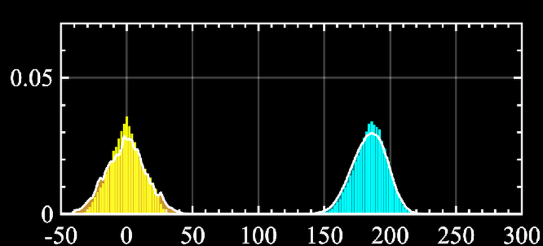
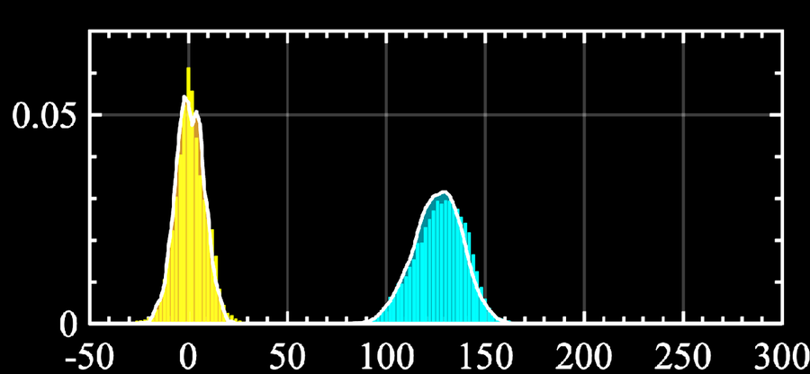
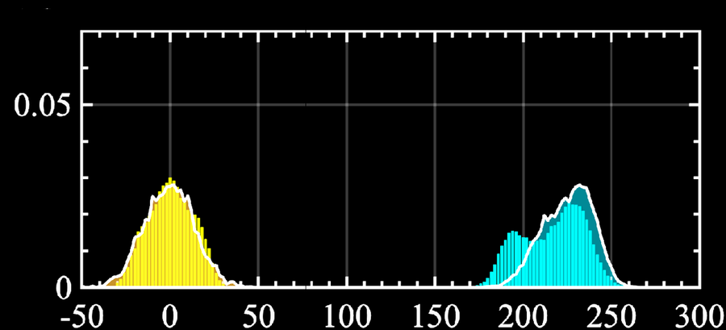
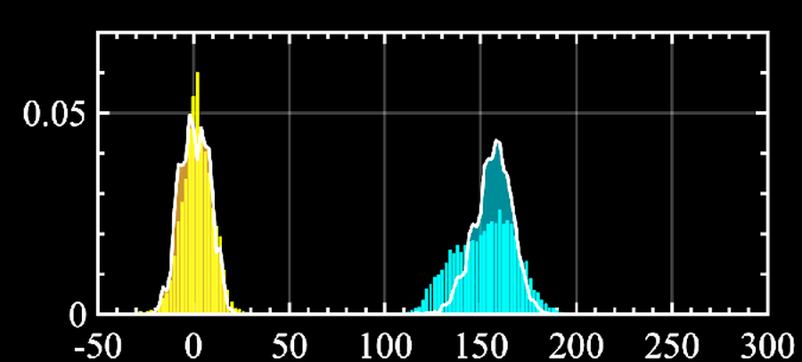

Particles on Earth, the Moon, and Mars, moving in air, reacting, and punching through shocks. You’ve come to the right place.
I am a postdoctoral researcher in the Computational Turbulent Reacting Flow Laboratory at Princeton, working with Prof. Michael E. Mueller. My current research focuses on atmospheric aerosols under extreme conditions. I received my PhD from the University of Michigan, where I worked under the guidance of Prof. Jesse Capecelatro on high-speed gas–particle flows. My PhD work combined high-order compressible flow solvers, Euler–Lagrange particle tracking, and close collaboration with experimentalists. The applications ranged from rocket plumes landing on the Moon and Mars to particles in the atmosphere.
News
- Nov 2025Joined the CTRFL group at Princeton as a postdoctoral researcher.
- Jul 2025Our paper explaining the radial dust streaks seen in lunar landings was published in Nature Communications and covered by Michigan Engineering and Johns Hopkins.
- Nov 2024Paper on inertial particles in underexpanded jets published in the Journal of Fluid Mechanics.
Projects
Atmospheric aerosols
At Princeton I am developing computational models for aerosol particles in the atmosphere, building on methods for particle-laden turbulence to understand how aerosols are transported and evolve.
Group: CTRFL, Princeton
Particles in underexpanded jets
Using ultra-high-speed schlieren, Lagrangian particle tracking, and three-dimensional simulations, we showed that particles shift the Mach disk of an underexpanded jet upstream even at low mass loading, and built a semi-analytic Fanno-flow model that predicts the size of the shift.
Mach disk shift scales with mass loading, nozzle pressure ratio η0 and slip velocity, and inversely with particle diameter
Papers: J. Fluid Mech. 2024 · ICCFD11 2022 · Nat. Commun. 2025
Particle velocity statistics: comparisons with experiments




Görtler vortices in highly underexpanded jets
Plume–surface interaction
When a lander fires its engines near the ground, the exhaust erodes regolith and launches high-speed ejecta. I simulated plume-driven erosion of granular beds under Martian conditions, helped explain the stable streak patterns seen from Apollo to Chang’e as a Görtler instability in the jet shear layer, and developed data-driven models of crater growth.
Strong two-way coupling
Papers: Nat. Commun. 2025 · AIAA 2026 · AIAA 2025 · AIAA 2022
Reduced-order models
Full simulations of gas–particle flows are expensive, so I built compact models that keep the dominant physics. Examples include a one-dimensional Fanno-flow model that predicts how particles move the Mach disk, and a sparse-regression with gene expression that reduces crater evolution during plume–surface interaction to a simple functional form connecting the state variables to the crater dimensions.
Papers: J. Fluid Mech. 2024 · AIAA 2025 · AIAA 2026
Publications
Journal articles
-
2025
Dusty streaks on the Moon: fingerprints of multiphase flow instabilities J. S. Rubio, N. S. Rodrigues, Y. Qi, M. Patel, M. T. Gorman, M. X. Diaz-Lopez, J. Capecelatro, P. M. Danehy, R. Ni Nature Communications 16, 6670 DOIOpen access
-
2024
Experimental and numerical investigation of inertial particles in underexpanded jets M. Patel, J. S. Rubio, D. Shekhtman, N. Parziale, J. Rabinovitch, R. Ni, J. Capecelatro Journal of Fluid Mechanics 1000, A60 DOI
Conference papers
-
2026
Data-driven framework to characterize crater dynamics during plume–surface interactions M. Patel, L. Bruni, N. Nanjappa, F. Evrard, J. Capecelatro, L. Villafañe Roca AIAA SciTech Forum, Orlando, FL DOI
-
2025
Two-way coupling in particle-laden compressible jets M. Patel, J. Capecelatro International Conference on Multiphase Flow (ICMF 2025) PDF
-
2025
Data-driven characterization of crater morphology during plume–surface interaction L. Bruni, M. Patel, F. Evrard, J. Capecelatro, L. Villafañe Roca AIAA SciTech Forum, Orlando, FL DOI
-
2022
A high-order low-dissipation Euler–Lagrange method for compressible gas–particle flows M. Patel, J. Capecelatro 11th International Conference on Computational Fluid Dynamics (ICCFD11), Maui, HI PDF
-
2022
Eulerian–Lagrangian simulations of plume-induced sheared granular beds under Martian conditions M. Patel, J. Rabinovitch, J. Capecelatro AIAA SciTech Forum, San Diego, CA DOI
For a complete and current list, see Google Scholar.